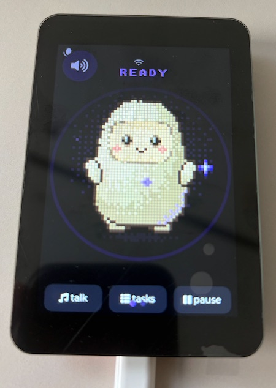
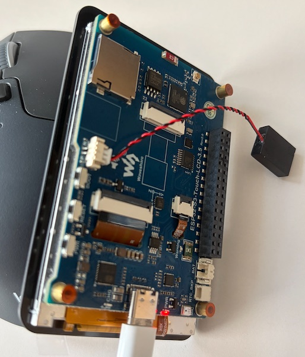
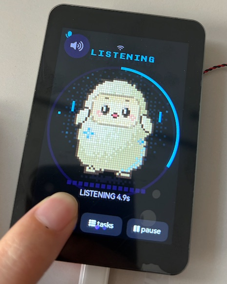

少即是多：没有复杂的 App，没有唤醒词，一块屏、一个键，把大模型放到你手边。
按下按键对着它说话，语音实时转写、大模型生成回答、清亮人声播报，全程不到一个呼吸的等待。
3.5 英寸触摸屏同步显示完整对话，中文渲染清晰细腻。听不清就低头看一眼，重要信息不划走。
一键切换：深夜问它，只亮屏、不出声。屏幕亮度自动压暗，回答改成文字，不打扰枕边人。
固件基于 Apache-2.0 授权的开源 SDK 深度定制，按键行为、提示词、外设皆可改——它是一块趁手的开发板。
放在书桌、床头或工位上，谁都能用：不需要学习，开口就行。
当前开发者套件基于 Waveshare ESP32-S3-Touch-LCD-3.5 核心板，规格如下。
| 主控 | ESP32-S3 双核处理器，带 PSRAM |
|---|---|
| 屏幕 | 3.5 英寸 320×480 IPS 电容触摸屏 |
| 音频 | ES8311 编解码芯片，板载麦克风与扬声器 |
| 连接 | Wi-Fi 2.4GHz · USB-C 接口 |
| 电源 | USB-C 供电，预留锂电池接口（AXP2101 电源管理） |
真实硬件，真实运行。


